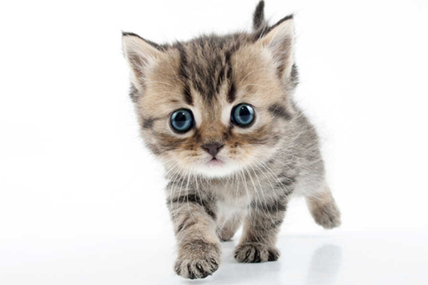
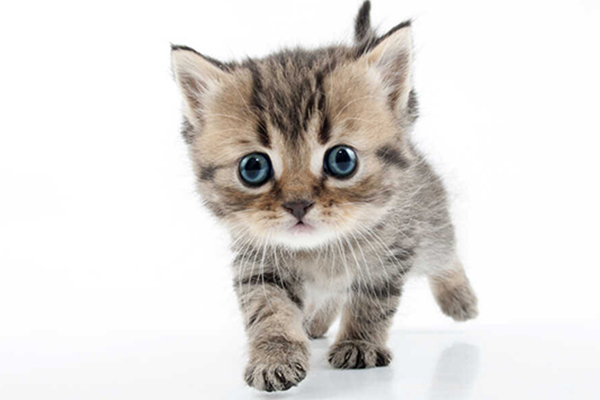

Psy i Koty
Psy, znane również jako najlepsi przyjaciele człowieka, są jednymi z najpopularniejszych zwierząt domowych na świecie. Wieloletnia przyjaźń między psem a człowiekiem ma korzenie sięgające tysiącleci. Psy są nie tylko lojalne, ale także inteligentne, co sprawia, że są doskonałymi towarzyszami. Istnieje wiele ras, różniących się wielkością, umaszczeniem, temperamentem i zdolnościami. Psy pełnią różnorodne role, od stróżów i przewodników dla niewidomych po terapeuty i członków rodzin. Wymagają odpowiedniej opieki, w tym regularnych spacerów, zdrowej diety i miłości. Zdolność do nawiązywania silnych więzi emocjonalnych z ludźmi sprawia, że psy są niezastąpionymi towarzyszami życiowymi, a ich obecność pozytywnie wpływa na zdrowie psychiczne i fizyczne ludzi.
Koty, jako jedne z najpopularniejszych zwierząt domowych, zdobyły serca ludzi swoją niezależnością i wdziękiem. Współistnieją z ludźmi od tysięcy lat, a ich sylwetki i zachowanie często inspirują sztukę i kulturę. Koty to zwierzęta o elastycznym charakterze, które potrafią być zarówno czułe, jak i niezależne. Są znane z łatwej adaptacji do życia w domu oraz zdolności do dostosowywania się do różnych warunków. Ich czystość, umiejętność polowania na gryzonie i przyjazność sprawiają, że są doskonałymi towarzyszami. Różnorodność ras kocich obejmuje zarówno małe i krępe kotki, jak i eleganckie i długowłose koty rasowe. Opieka nad kotem obejmuje regularne karmienie, zabawę, a także dbanie o higienę i zdrowie zwierzęcia.
| Pies | Człowiek |
| 6m-cy | 10 lat |
| 10m-cy | 14 lat |
| 12m-cy | 15 lat |
| 18m-cy | 20 lat |
| 2 lata | 24 lata |
| 3 lata | 28 lat |
| 4 lata | 32 lata |
| 5 lat | 36 lat |
| 6 lat | 40 lat |
| 7 lat | 44 lata |
| 8 lat | 48 lat |
| 9 lat | 52 lata |
| 10 lat | 56 lat |
| 11 lat | 60 lat |
| 12 lat | 64 lata |
| 13 lat | 68 lat |
| 14 lat | 72 lata |
| 15 lat | 76 lat |
| 16 lat | 80 lat |
| 17 lat | 84 lata |
| 18 lat | 88 lat |
| 19 lat | 92 lata |
| 20 lat | 96 lat |
 
